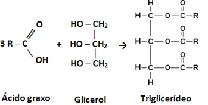
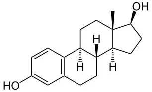
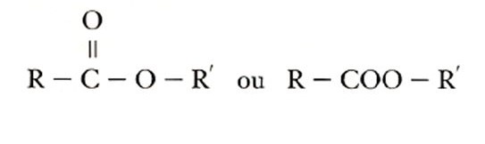
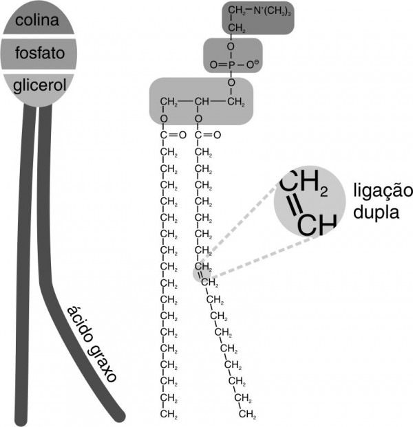

Home |
Sobre |
Função |
Classificação |
Benefícios |
Malefícios |
Alimentos |
Fonte |
Contato |
|
Grupos e Classificações Existem 5 tipos principais de lipídios na natureza, são eles: Glicerídeos: Podem ser sólidos ou líquidos, dependendo da temperatura ambiente. São importantes na nutrição, no armazenamento e na estrutura celular de organismos, e possuem a mesma estrutura química dos triglicerídios -Triglicerídeos: Fazem parte do grupo de glicerídeos, sendo também as principais gorduras presentes em nosso organismo, funcionando principalmente como reserva de energia. Estrutura química- São feitos por uma molécula de glicerol (C3H803) ligada a três de cadeias de ácidos graxos com cada cadeia tendo de 14 a 22 átomos de carbono.  Esteroides: são constituídos por longas cadeias carbônicas em quatro anéis ligados entre si. Constituem os hormônios sexuais, a vitamina D e o colesterol. Estrutura química- Os esteroides são lipídios que possuem uma estrutura geral de hidrocarbonetos com 17 átomos de carbono ligados em quatro estruturas cíclicas.  Cerídeos: são lipídios simples, achados na cera das abelhas e em algumas plantas. São impermeabilizantes e protegem a superfície de plantas. Estrutura química- São formados por ésteres e álcoois graxos superiores, que sempre iram conter mais de 16 átomos de carbono.  Fosfolipídios: eles possuem duas partes, uma chamada de região polar e a de outra região apolar. Enquanto a apolar repele a água, a polar tem afinidade com ela. Estrutura química- Composta por duas "caudas" de ácidos graxos ligadas por um glicerol a uma "cabeça" hidrofílica que consiste de um grupo fosfato.  |